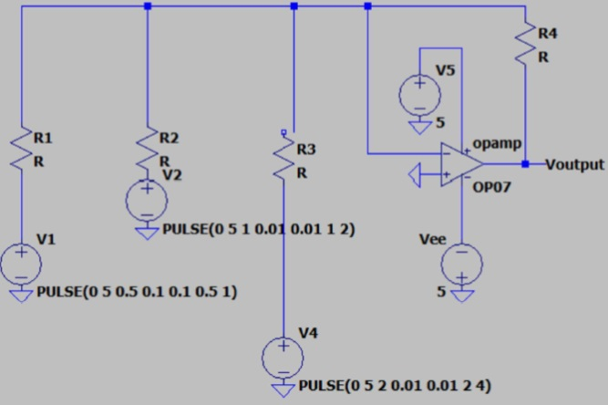
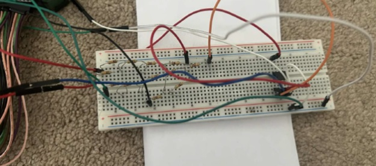
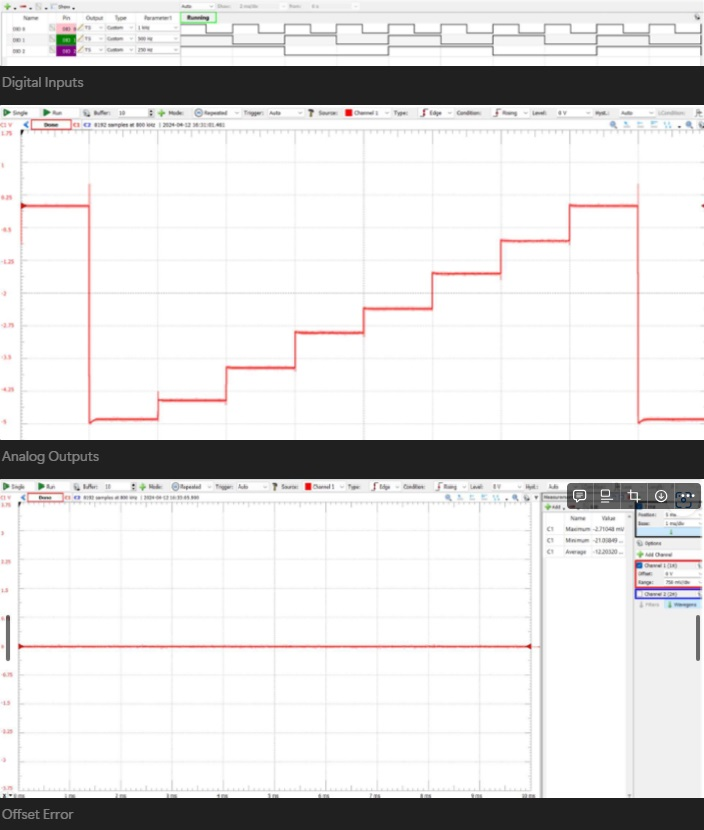

3-bit Digital-to-Analog Converter
Project Overview
Introduction:
- Title: 3-bit Digital-to-Analog Converter
- Duration: April 2024 - April 2024
- Role: Project Engineer
- Technologies Used: LT Spice, Waveforms Software, Analog Discovery 2
Summary:
Engineered a 3-bit weighted resistor DAC capable of transforming digital signals into analog outputs up to 5V with exemplary precision. This project required meticulous design, simulation in LT Spice, and rigorous testing with Waveforms software to ensure real-world applicability and performance adherence.
Objectives:
- Design Precision: Craft a DAC with minimal linearity errors and high fidelity in output.
- Simulation Accuracy: Use LT Spice for rigorous circuit simulations to predict and optimize real-world behavior.
- Validation and Testing: Employ Waveforms software and Analog Discovery 2 for empirical testing and validation.
- Optimization: Continuously improve circuit performance based on testing feedback, focusing on reducing gain error and differential non-linearity.
Technologies and Tools:
- LT Spice: Used for detailed circuit simulation and schematic design.
- Waveforms Software: Utilized for managing digital inputs and real-time output measurement.
- Analog Discovery 2: Deployed for generating digital signals and oscilloscope functionality to observe and adjust the circuit’s performance dynamically
Project Achievements
- Designed with Precision: Achieved a maximum output voltage of 5V from digital inputs, with a highly linear response corresponding to input variations.
- Performance Metrics: Attained a gain error as low as 0.28% and differential non-linearity of just 5.6%, demonstrating the circuit's high precision.
- Validation Success: Confirmed theoretical models and simulations with over 95% accuracy in practical applications, ensuring reliable DAC performance.
Gallery/Visuals
LTSpice Circuit Diagram:
Real-Life Circuit Implementation:
Waveforms and Testing Outputs:
Challenges and Solutions
- Challenge: Maintaining output accuracy across various load conditions and operational environments.
- Solution: Refined the circuit design with feedback from real-world testing, employing enhanced components and calibration techniques to ensure consistent output quality.
Future Directions
- Expand Bit Capacity: Investigate the feasibility of developing higher-bit DACs for more complex applications requiring finer granularity of analog output.
- System Integration: Aim to integrate the DAC into larger electronic systems, such as embedded devices and industrial control systems, to broaden its application scope.